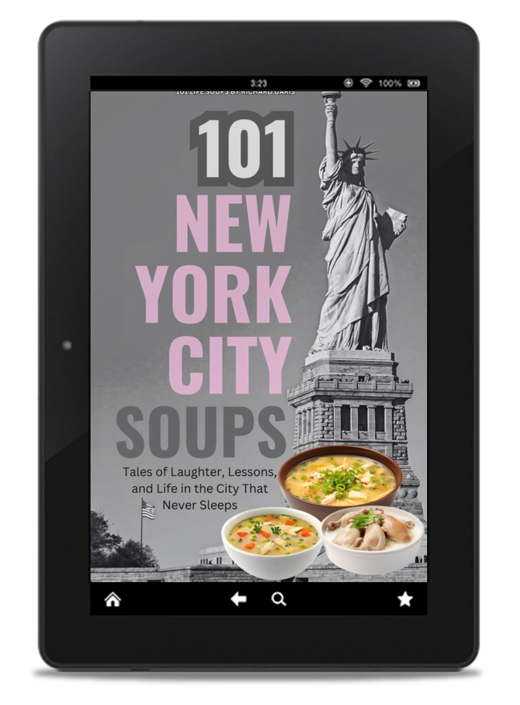

The Most Magical Journey Through New York City Awaits You!
"Every moment is a symphony of emotions—filled with heartwarming inspiration and unforgettable laughter."
by: Richard Daris
For Dreamers, Adventurers, and Story Collectors
Let me take you on a journey—not just through the streets of a city but deep into its magical essence. They say New York City isn’t just a place; it’s an experience. It’s the unique thrill of hailing a cab during rush hour, the delightful surprise of hearing a street musician who seems to sing just for you, and the comfort of a warm pretzel on a cold day.
Every corner of the city holds a story. Every story waits to be lived. Now, you can hold all these tales in your hands with “101 NYC Soups: A Love Letter to the City That Never Sleeps.” This book is a collection of emotional symphonies that warm your heart, inspire your soul, and bring a smile to every page. It captures the soul of New York in moments that are imperfect yet profoundly beautiful.
A City Like No Other
Imagine this: A foggy morning in Central Park. You sit on a bench surrounded by trees whispering in the breeze. The soft crunch of gravel under a jogger’s footsteps blends with the faint hum of a city slowly waking up. Central Park knows how to set your worries free.
A bustling afternoon in Chinatown. The aroma of freshly steamed dumplings mingles with the lively chatter of vendors and the rhythmic clanging of woks. Here, you enjoy a small pouch of deliciousness cheaper than your morning coffee but warmer to your soul in ways you never expected.
The wonder of an unexpected rainy night in SoHo. Seeking shelter leads you to discover an art gallery so moving that the storm outside melts away from your thoughts entirely. These are more than memories—they are threads of stories only New York can weave.
Kaleidoscope of Moments
Every street has its own personality, and each borough offers its own charm. Harlem pours music into your soul, the Bronx presents real resilience, and in Brooklyn, the smell of fresh bread greets you from a small shop nestled between red-brick buildings.

And there are small moments that are so meaningful:
- The barista who finally spells your name correctly.
- A stranger who helps carry your groceries up the subway stairs.
- The way this city somehow makes you feel supported, even when the odds seem against you.
Resilience and Warmth at Every Corner
New York teaches you to embrace the absurd. To laugh when your umbrella flips inside out from the wind or to find comfort in getting lost but still feeling at home. There’s an unexpected warmth in this chaos: A stranger holding the subway door for you. The shared camaraderie in exasperated glances inside a crowded elevator. The wonder of seeing the season’s first snow blanket the city. These moments remind you that even in life’s toughest times, New York always has a way of softening its edges.
Timeless Stories Waiting to Be Lived

New York isn’t just a backdrop; it’s a stage. This is where the melodies of street musicians linger long after you’ve walked away, a wrong turn leads to hidden treasures, and an ordinary day transforms into the extraordinary.
Every experience is a gift:
- The bookstore owner who recommends a read that changes your perspective.
- A late-night conversation with a stranger in a tiny diner.
- The unexpected reunion with a long-lost friend you haven’t seen in years.
An Invitation to Discover New Wonders

Whether you’ve explored this city hundreds of times or only dreamed of it, there’s always something new to uncover. New York makes every encounter feel like the first—fresh, surprising, and brimming with possibility.
Step into a world where life moves fast, but stories remain timeless.
Laugh. Cry. Be inspired. Taste New York, one bowl of soup at a time.
Secure Your Spot at the Never-Ending Show
The lights are coming up.
The curtains are drawing back. The city’s greatest performance is waiting for you.
Let New York remind you that life, in all its beautiful messiness, is always worth celebrating.
Click below for your copy of “101 NYC Soups” today and experience the laughter, the tears, and the unexpected magic of life.
New York is the stage, and you are part of its ongoing story.
New York is calling. Will you answer?
Click yellow button below
ORDER HERE NOW"Download 10 Free Chapters of 101 NYC Soups and immerse yourself in the heartwarming stories and magical moments that define New York City. Experience the soul of the city through heartfelt anecdotes and vibrant tales that will inspire and uplift you. Click Here to claim your exclusive preview and take the first step on this unforgettable journey!"